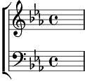

1. Le soir a jeté ses pervenches,
Une barque lente passe, nonchalante,
L'aile grande ouverte et si blanche.
Sur l'eau qui tressaille la brise a glissé
Ses mains parfumées d'avoir caressé
Au creux des vallées les vieux châtaigniers
Aux longs cheveux verts.
Cependant, assis auprès du rivage
Je contemplerai ton visage
Ô mon beau lac pur,
Ô mon lac, ô mon beau lac sage.
2. La nuit en sa robe de soie.
Pique des étoiles et la barque lasse
L'aile grande ouverte s'efface.
Sur l'eau qui s'étonne, au cygne luisant
Comme une corolle, la brise a conté
Fraîche messagère les secrets des flots,
Du ciel et de l'air.
Cependant, assis auprès du rivage,
Nous devinerons ton visage.
Ô mon beau lac pur,
Ô mon lac, ô mon beau lac sage.